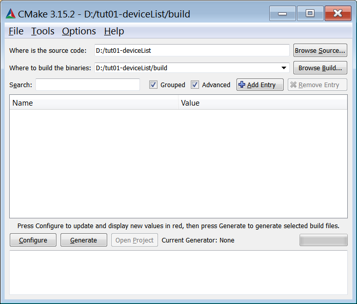
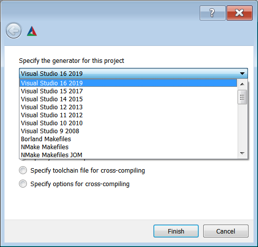
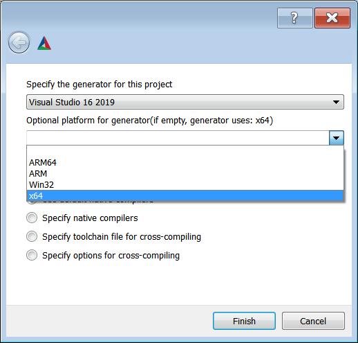
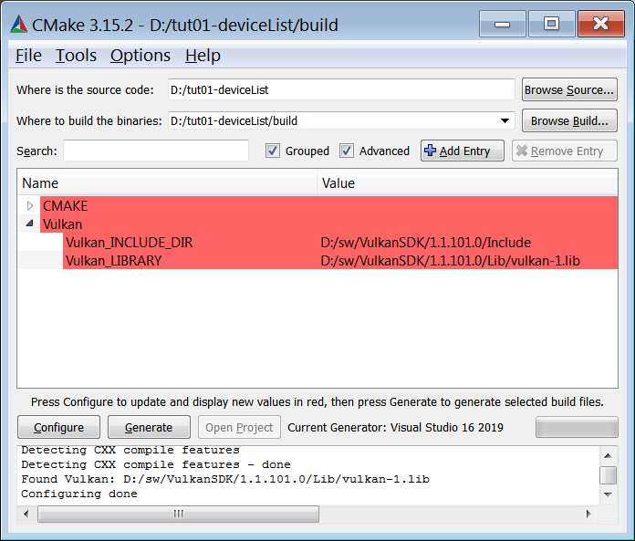
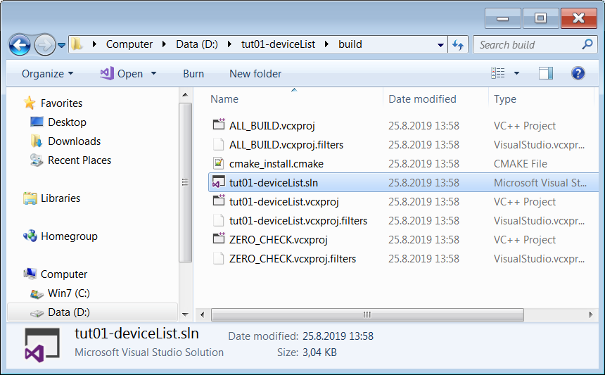
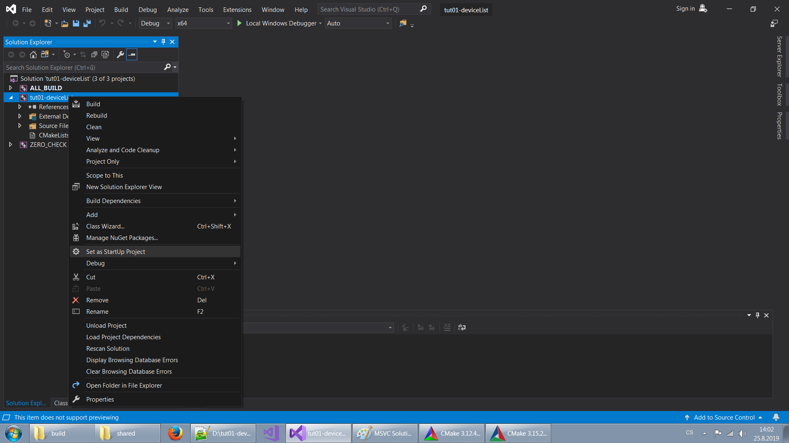

V tomto díle seriálu si ukážeme, jak nainstalovat vývojové prostředí a zkompilovat první Vulkanní aplikaci.
Pro kompilaci a ladění budeme používat množství nástrojů a knihoven. Na Windows budeme používat Visual C++ 2017 či novější. Na Linuxu jakýkoliv standardní c++ kompilátor. Já zde budu prezentovat g++. Mimo kompilátor budeme potřebovat ještě CMake a Vulkan SDK. CMake doporučuji verzi 3.10.2 či novější, alespoň tak radí stránky Vulkan SDK. Budu předpokládat, že čtenář je zkušený programátor a má c++ vývojové prostředí nainstalované a plně funkční. Na Linuxu je to nejčastěji balík build-essential (na Ubuntu) a na Windows zmíněné Visual C++ 2017 či novější. Rovněž budu předpokládat, že instalace CMake čtenáři není cizí. Na Linuxu jsou to balíčky cmake, cmake-curses-gui (Ubuntu) a případně nějaký balíček pro okenní GUI front-end. Já však budu používat pouze ccmake z balíku cmake-curses-gui pro gui v konzoli. Na Windows stáhneme CMake z jeho domácích stránek. Pro další informace odkazuji na internet.
Máme-li funkční vývojové prostředí a nainstalovaný CMake, zbývá nainstalovat Vulkan SDK. Ten je k dispozici na stránkách LunarG. Zde se proklikáme na stránku SDK a stáhneme nejnovější verzi pro naši platformu, tedy pravděpodobně Windows nebo Linux.
Instalace na Windows není složitá - spustíme stažený instalátor a proklikáme se instalátorem až do konce. Nejvíce nás asi vyruší otázka, kam chceme SDK nainstalovat. Nechám na osobních zvycích každého. Na závěr ani nemusíme restartovat počítač. Pokud jsme ale měli spuštěné Visual C++ nebo CMake, doporučuji zavřít je a znovu spustit. Instalátor totiž nastavil proměnnou prostředí VULKAN_SDK a všechny nově spuštěné aplikace nyní budou vědět, kde Vulkan SDK hledat. Již běžící aplikace ale o této nové proměnné nic netuší a budou se tvářit, jako by žádné SDK nainstalované nebylo. Proto je tedy vhodné CMake a Visual C++ zavřít, pokud běžely, a znovu je spustit.
Instalace na Linuxu je trochu zajímavější. Nabízejí se tři "populární" možnosti, jak zprovoznit Vulkan. Můžeme nainstalovat buď:
První volba nám dá minimální prostředí. Druhou volbu doporučuji pro seriózní vývoj. A třetí pouze pro ty, kteří vědí, co chtějí, a také vědí, jak toho dosáhnout. Tím bychom třetí volbu odbyli a pojďme se podívat na druhou a pak na první volbu.
Vulkan SDK skrz balíčkovací systém vyžaduje přidání balíčkového repozitáře. Pak už jen aktualizujeme seznam balíčků a doinstalujeme Vulkan SDK. Na stránkách pro stažení Vulkan SDK máme instrukce pro tyto kroky a tento seznam příkazů pro kompletní instalaci. Každá verze má trochu odlišné parametry příkazů. Takto vypadají pro Ubuntu 18.04 a Vulkan verze 1.1.114:
wget -qO - http://packages.lunarg.com/lunarg-signing-key-pub.asc | sudo apt-key add - sudo wget -qO /etc/apt/sources.list.d/lunarg-vulkan-1.1.114-bionic.list http://packages.lunarg.com/vulkan/1.1.114/lunarg-vulkan-1.1.114-bionic.list sudo apt update sudo apt install vulkan-sdk
Pro novější verzi Vulkanu sledujte instrukce na stránce. Po instalaci je vše hotovo a můžeme začít Vulkan používat.
Pro ty, kteří chtějí minimální Vulkan vývojové prostředí, je zde volba balíčků distribuce, pokud je daná distribuce má. Na Ubuntu 18.04 jsou to libvulkan-dev, libvulkan1 a vulkan-utils balíky a nesou verzi Vulkanu 1.1.70, tedy z března 2018. Nevýhody tohoto přístupu jsou tedy často starší verze Vulkan a absence mnoha utilit a pomocných aplikací z Vulkan SDK. Výhodou je pak jednoduchost instalace.
Pro správně fungující Vulkan potřebujeme i odpovídající hardware a drivery. Vulkan je podporován Nvidií od generace Kepler, tedy GeForce 6xx (rok 2012). AMD ho podporuje na GCN, tedy od Radeon HD 7700-7900 (rok 2012). Intel od generace Skylake, řada i3-i7 6xxx (rok 2015). Avšak na Linuxu máme podporu již od Ivy Bridge (rok 2012). Více je v přehledné tabulce na Wikipedii.
Ohledně driverů, doporučuji nemít více jak rok staré ovladače. Podpora Vulkan totiž přichází s ovladačem. A máme-li funkční Vulkan, zjistíme například utilitou vulkaninfo. Tu spustíme na Linuxu v konzoli a na Windows ji najdeme v nabídce Start. Vulkaninfo je opravdu detailní a snaží se nám nezatajit sebemenší detail, proto je poněkud náročnější v něm najít názvy grafických karet, které ve vašem počítači podporují Vulkan. Kdo nainstaloval Vulkan SDK může využít vkconfig / Vulkan Configurator, kde najde informace přehlednějším stylem. Název první podporované grafické karty je pak na záložce "Vulkan Info" v položce "Device Properties and Extensions" -> GPU0 -> VkPhysicalDeviceProperties -> deviceName. Máme-li více karet, najdeme je pod GPU1, GPU2, atd.
A pokud máte podporovaný hardware a stále vám Vulkan nejede? Closed-source ovladače najdeme na stránkách Nvidie i AMD. Pro Linux máme volbu i open-source ovladačů, především pro AMD a Intel. Ty jsou součástí Mesa3D a na Ubuntu 18.04 je najdeme v balíčku mesa-vulkan-drivers. Pro další informace odkazuji na internet.
Kompilace na Linuxu by měla být jednoduchá. Stáhneme zdrojáky prvního tutoriálu a rozbalíme je do složky. Doporučuji nekompilovat přímo ve zdrojácích, ale vytvořit si například ve složce zdrojáků podsložku s názvem build. Kompilace pak může vypadat v nejjednodušším případě takto:
cd build cmake .. make ./tut01-deviceList
Pokud cmake úspěšně zkonfigurovalo celý projekt, následující příkaz make zkompiluje zdrojáky. Pokud se s cmake objeví nějaký problém, nebo pokud chceme zkontrolovat či zmodifikovat konfiguraci projektu, můžeme spustit ve složce build ccmake, které nám poskytne konzolové UI:
ccmake ..
V ccmake klávesou c provedeme konfiguraci projektu. Pokud je vše ok, klávesou g vygenerujeme makefiles. Jinak můžeme procházet seznam proměnných a klávesou enter modifikovat jejich obsah. Klávesou t přepínáme viditelnost pokročilých voleb. Po editaci proměnných, závěrečné konfiguraci a vygenerování makefiles klávesou q ukončíme ccmake.
Pokud se nám stalo, že cmake nemohlo najít Vulkan, může nastavit proměnnou prostředí VULKAN_SDK nebo nastavit manuálně proměnnou Vulkan_LIBRARY a Vulkan_INCLUDE_DIR v ccmake, což je nejjistější cesta.
Po úspěšné konfiguraci příkazem make v konzoli zkompilujeme zdrojáky a můžeme se pokusit spustit výslednou aplikaci. Měli bychom být odměněni výpisem Vulkan zařízení přítomných v systému. Například:
Physical devices: Quadro K1000M
Pokud jej vidíte, gratuluji a máme otevřenu cestu k dalším dílům tutoriálu.
Na Windows, stejně jako na Linuxu, nejprve stáhneme zdrojáky a rozbalíme je do složky. Pak spustíme cmake-gui.exe. Najdeme jej buď v nabídce Start nebo ve složce, kam jsme Cmake nainstalovali v podložce bin. Spuštěný CMake vypadá takto:
Nastavíme cestu ke zdrojákům a cestu do složky, kde bude prováděn build. Následně klikneme na tlačítko konfigurovat. Objeví se dialog, kde nastavíme hlavní parametry projektu:
 Především vybereme generátor pro vaši verzi Visual Studia. Pokud tam chybí vaše nejnovější verze Visual Studia, zkuste aktualizovat CMake. Pod výběrem generátoru je i výběr platformy, pokud bychom si přáli 32-bit build nebo kompilovat pro ARM, atd. Na závěr klikneme na Finish. Projekt se nyní zkonfiguruje a měli bychom vidět následující okno CMake:
Pokud vybereme zaškrtávátko Advanced, měli bychom vidět i cesty k Vulkanu, jak INCLUDE_DIR tak LIBRARY. Pokud něco neodpovídá, nastavíme manuálně. Znova provedeme Configure a pokud je vše ok, klikneme na Generate. Ve složce build by se nyní měl objevit soubor tut01-deviceList.sln. Poklepáním na něj se otevře Visual Studio. Klikneme pravým na tut01-deviceList projekt a vybereme "Set as StartUp Project" a od této chvíle můžeme kompilovat a spouštět aplikaci. Po úspěšném spuštění můžeme vidět obrázek podobný tomuto:
 Na tomto počítači vidíme tři karty. GeForce a Radeon jsou přítomny vždy, Intel jen když má zapojený monitor do jednoho ze svých výstupů. Pokud jste úspěšně došli až sem, gratuluji a můžeme se těšit na úspěšné kompilace a spouštění dalších dílů našeho tutoriálu.
- nahradit Quadro K1000M za GeForce - doplnit cmake screenshoty